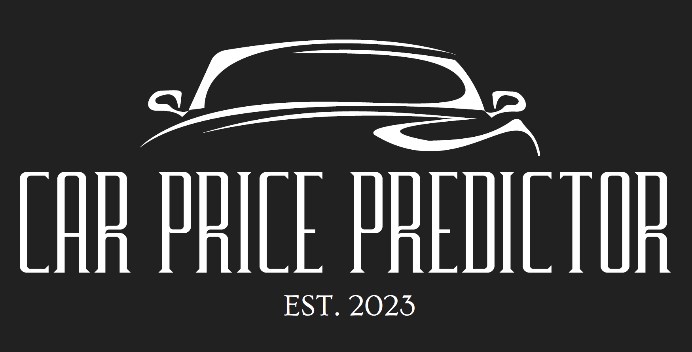
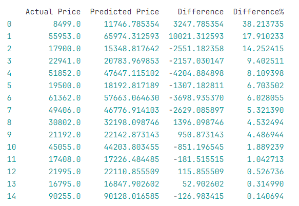
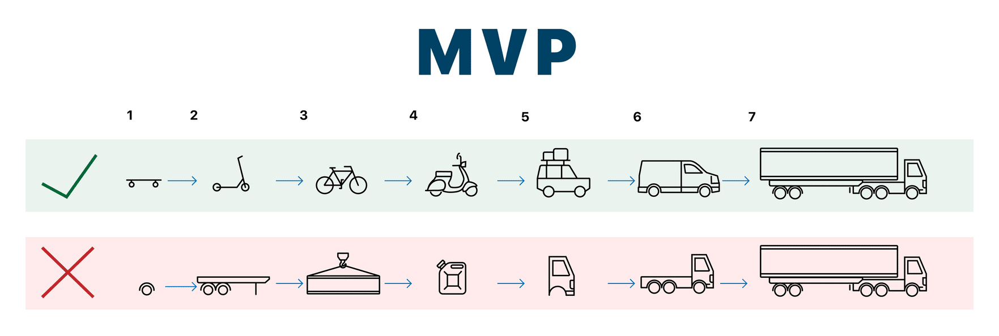
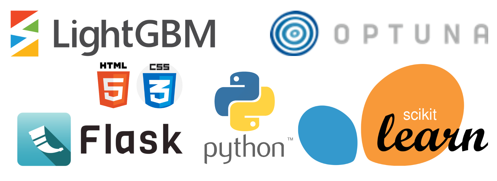
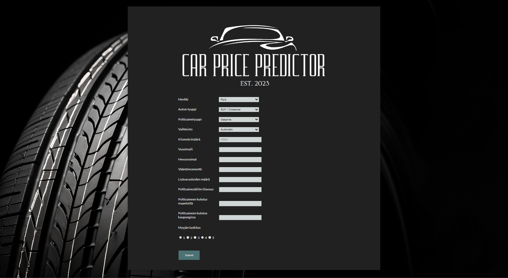

This is the final section of the steps for this project. In the final report, we present the steps taken during the project and the results of the project. This report also summarizes next steps for the application made during the project.

In the first two steps, we defined the purpose of the project and the need for this project. The customer's needs were mapped in order to understand what the customer really wants so that the application can be developed in the right direction. We also looked into the material so that we could handle it correctly in the next steps.
A thorough examination of the available data was conducted, resulting in the creation of a comprehensive Data Description Report. This step was essential in determining the cleanliness and adequacy of the data, ensuring its suitability for subsequent analysis.
The first two phases went well and everyone on the team had a clear idea of what the purpose of this project was.
Each team member was assigned a topic to research. The topics were "Impact of Sales Area on Vehicle's Age, Type, and Price", "Cars That Sell the Worst", "Effect on Price for Vehicles Used as Taxis" and "Identifying Dominant Features for Sales". At this stage, every member of the team gained valuable experience in processing large amounts of data and visualizing that data. At this stage, each team member also got an idea of what information the dataset contains and how we can use the data in the next steps.
In the modeling phase, we tested different models and tried to find out which machine learning model would be the best fit for this data. During this phase, we still had to go back to the preprocessing phase, because in the modeling phase our understanding of the data deepened, and we were able to find out the characteristics that had the most impact on the model. In the modeling phase, we achieved very good results. Optuna parameter optimization was employed to fine-tune the model, ensuring its optimal performance in capturing the underlying patterns in the data. The final model predicts the price of the car with more than 95% accuracy. We are currently satisfied with the accuracy of the model. However, nothing is ever really ready, the model could always be improved.

The models were rigorously evaluated to determine which one best aligned with the business objectives. The Model Evaluation process provided insights into the effectiveness of the developed models, allowing for informed decisions on model selection.
The project culminated in the deployment phase, where we got to the point where we run the application locally. The application has a front end and a small back end using the Flask framework. Flask connects the trained model to a user interface where the user enters the car's information and then gets a prediction for the car's price. The information that the user enters in the UI has been selected according to what our machine learning model considers to be the most price-influencing features.
During the entire project, we were able to achieve the so-called MVP. From this, it is easy to continue in the future with a more automated process, where, for example, when new data comes in, the model would be automatically trained with the new data.

Here are all the technologies we have used during the project.

The model is currently executed locally on a computer. Instructions for running the application can be found in the Deplyment phase repository.
Deploying the application to a server would provide a more scalable, accessible, reliable, and collaborative environment, with improved resource utilization and enhanced security, making it a preferable choice for production-ready applications. Deploying the application to server would be the next step in this project. We would choose server like CSC, because its free to use for students and some of the team members have previously used CSC's services for hosting applications.
Selecting a Production Server
Preparation of the Model
Model is already prepared. Model is trained and testted thoroughly in the development environment. All needed components (libraries, model, frameworks) should be containerized to ease the deployment.
Environment Setup on Production Server
Required runtime environment should be set up to production server, including installing necessary libraries, frameworks, and dependencies. Production server should match the specifications of the development env.
Model Upload to Server
Packaged model files should be transferred to the production server. This can be done using various methods, such as SCP (Secure Copy Protocol), FTP (File Transfer Protocol), or through version control systems.
Model Verification
Integrity of the transferred model files on the production server should be verified to ensure that there are no data corruption issues during the upload.
Server Configuration Updates
Server configurations should be updated to integrate the model into the production environment. This may involve modifying server settings, environment variables, or system configurations.
Testing the Deployed Model
Initial tests should be conducted to ensure that the model runs correctly in the production environment. This may involve running sample predictions and evaluating performance metrics.
Monitoring and Logging
Monitoring and logging mechanisms should be implemented to track the performance of the deployed model. This includes logging predictions, monitoring resource usage, and setting up alerts for potential issues.
Documentation and Versioning
The deployed model should be documneted, including version information, dependencies, and any specific configurations. Proper version control should be maintained to facilitate future updates and rollbacks.
Post-Deployment Testing
Thorough testing after deployment should be conducted to verify that the model performs as expected in a production setting. This includes testing with real-world data and user scenarios.
A maintenance plan is crucial for ensuring the continued functionality, performance, and security of your application. Here's a rough-level maintenance plan for a Car Price Predictor deployed in a production environment.
Regular Monitoring
Data Quality Checks:
Scheduled Retraining:
Backup and Recovery
Documentation Updates
Dependency Management
Performance Optimization
Scalability Planning
Feedback Loops
Environment Testing
Continuous Improvement
In the current version, the user enters 10 selected car features into the user interface. After this, the user clicks the "Submit" button, after which the predicted car price appears on the screen.

The main user of this application is car dealership employees responsible for determining prices for new cars. The car price predictor could possibly also be used by car shop customers who are interested in how much money they could get for their own car.
Throughout the AIDA project, Team 1 has diligently followed the CRISP-DM model to tackle the challenge of understanding and leveraging collected data for meaningful insights. The project's primary objective was to develop machine learning models aligned with the customer's needs, with a focus on optimizing the understanding of sales dynamics in the context of vehicle age, type, and price.
In conclusion, AIDA Project Team 1 successfully navigated through the CRISP-DM model, transforming raw data into valuable insights. The implemented machine learning models are poised to contribute meaningfully to the understanding of sales dynamics, thereby empowering the customer with actionable information for informed decision-making. The comprehensive approach taken by the team in each step underscores the commitment to delivering a robust and impactful solution to the client's needs.
This is a demo of our application. it is ran locally, and it shows how to input data to form and get prediction of price based on user inputs.
from IPython.display import HTML
HTML("""
<video alt="test" controls>
<source src="./img/demo.mp4" type="video/mp4">
</video>
""")In the future, the user could be given the option to enter more features of the car, depending on what the user wants to enter. This application could also be integrated into the pages of a car shop either for internal use only, or for the public use also.